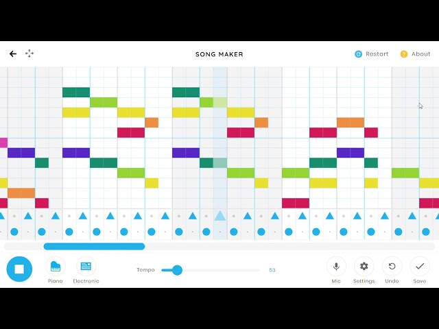
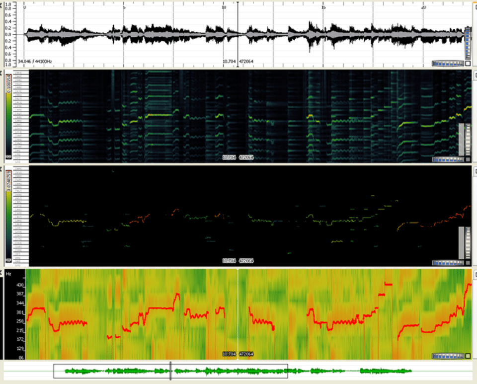

Week 4: Rhythm and Melodic Structure of "Twinkle Twinkle Little Star"
Analysis Overview: In this week’s analysis of "Twinkle Twinkle Little Star," we’ll focus on the song’s rhythm, melodic structure, and time signature. Using tools like MuseScore and Sonic Visualiser, we can break down the individual elements that contribute to the overall musical experience.
Rhythm Analysis
Rhythm Patterns: The rhythm of "Twinkle Twinkle Little Star" is simple, with quarter notes forming the core of the melody. The song is in **4/4 time** and is evenly spaced. The rhythmic pattern alternates between short and long notes, contributing to its catchy and repetitive nature.
Time Signature: The time signature is **4/4**, meaning there are four beats in each measure, and each beat is a quarter note. This regular structure makes the song easy to follow and is characteristic of many children’s songs.
Tempo: The tempo of "Twinkle Twinkle Little Star" is typically around **80-100 BPM (beats per minute)**, which is moderate and suitable for young children to sing along with.
Visual Rhythm Representation: Below is the rhythm pattern visualized using Sonic Visualiser. It highlights the placement of beats and the note durations.
Melodic Structure
The melody of "Twinkle Twinkle Little Star" is symmetrical and simple. The song follows an **A-A-B-A** structure, where the first phrase is repeated, and the second phrase provides a slight variation before returning to the first phrase’s melody.
Melodic Phrasing: The song consists of four lines of melody, each corresponding to a line of lyrics. Each of the four phrases is identical except for a slight rhythmic variation in the second phrase. This creates a balanced and pleasing repetition.
Pitch and Melody Visualization: Below is a visualization of the melody, showing the pitch and its movement across time using Sonic Visualiser.
Conclusion
This week’s analysis shows that "Twinkle Twinkle Little Star" is a simple, repetitive melody with clear rhythmic and harmonic patterns. The 4/4 time signature and moderate tempo make it easy to sing along with. The song’s structure is easy to follow, making it perfect for young children to sing and learn about music.
Next Week →